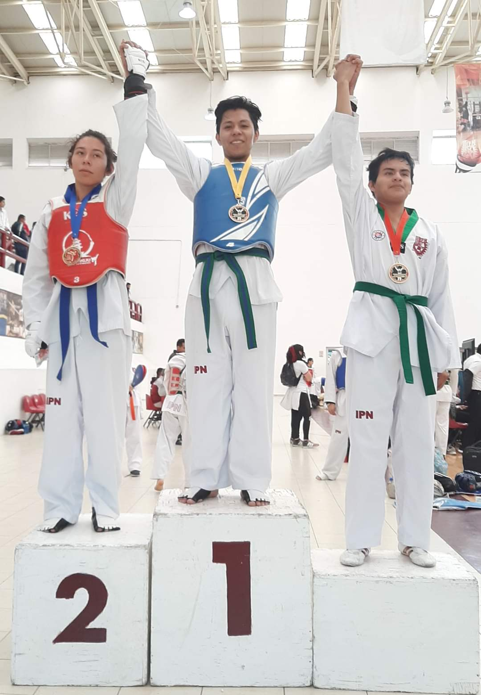

Inicio
Bienvenido a mi página web, mi nombre es Isaac Molina Santiago.

Autobiografía
Nací un sábado 18 de septiembre de 1999 en la Ciudad de México en la delegación de Venustiano Carranza. Mi padre es el señor Nicolás Molina y mi madre es María Santiago, ambos estuvieron conmigo en mi etapa de crecimiento. Mi padre en ese entonces (y actualmente) es chofer taxista que, por cierto, cuida muy bien su unidad de trabajo, mientras mi madre es ama de casa desde aquel entonces, que, sin dudarlo, esos años de experiencia en la cocina se ven reflejados cada día. Ambos me han cuidado hasta hoy en día. Actualmente soy el mayor de dos hermanos, cuyos nombres son Estefany y Abraham. Inicie mis estudios a la edad de 5 años en una escuela de paga cerca de mi casa. Después fui cambiado a una escuela de gobierno porque mis padres ya no podían mantener mis estudios, sin embargo, no fui obstáculo para detenerme, ya que terminé con excelentes calificaciones mi primaria. Estudie la secundaria “Escuela Diurna N° 141 Guillermo González Camarena” ubicada en la delegación G.A.M. Mi bachillerato lo curse en el Centro de Estudios Científicos y Tecnológicos # 3 “Estanislao Ramírez Ruiz” del IPN, ubicada en el hermoso municipio de Ecatepec de Morelos. Actualmente curso la carrera de Ingeniería en Sistemas Computacionales en la Escuela Superior de Cómputo y soy practicante de la disciplina Tae-Kwon-Do.
Formación académica
Preescolar: Escuela Paideia
Dirección: Av. Valle de Almazora 342, Granjas Independencia, 55290 Ecatepec de Morelos, Méx.
Primaria: Escuela Primaria José Clemente Orozco
Dirección: Pedro Ojeda Paullada, 55295 Ecatepec de Morelos, Méx.
Secundaria: Escuela Secundaria No. 141 Guillermo González Camarena
Dirección: Avenida, Calz. San Juan de Aragón, 6a Sección, 07918 Ciudad de México.
Bachillerato: Centro de Estudios Científicos y Tecnológicos N° 3 "Estanislao Ramírez Ruíz" IPN
Dirección: Av. Carlos Hank González s/n, Valle de Ecatepec, 55119 Ecatepec de Morelos, Méx.
Carrera universitaria (en curso): Escuela Superior de Cómputo
Dirección: Av. Juan de Dios Bátiz S/N, Nueva Industrial Vallejo, Gustavo A. Madero, 07738 Ciudad de México, CDMX.
Intereses
Intelegencia Artificial, Aprendizaje de máquinas, Criptografía, Mecánica automotriz y Artes marciales
Hobbies
- Escuchar música
- Ver series
- Jugar videojuegos
- Aprender sobre automovilismo
- Entrenar Tae-Kwon-Do


Contacto
A continuación, te dejo unos medios por si gustas contactarme:
Teléfono celular (WhatsApp): 55-60-29-24-35
Correo eletónico: isaacmolinasantiago@gmail.com
Descargas